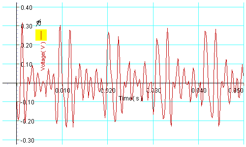
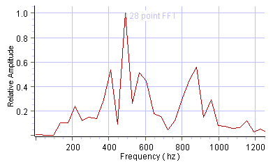
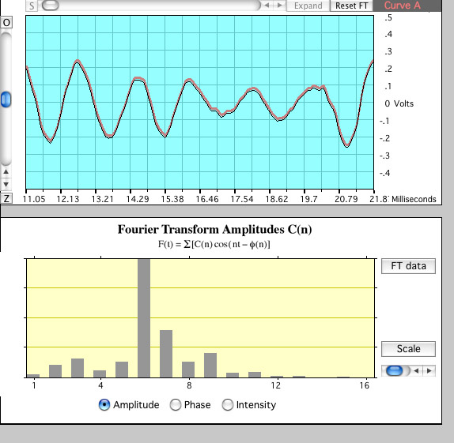
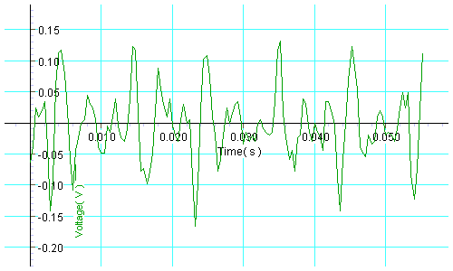
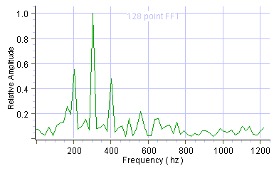
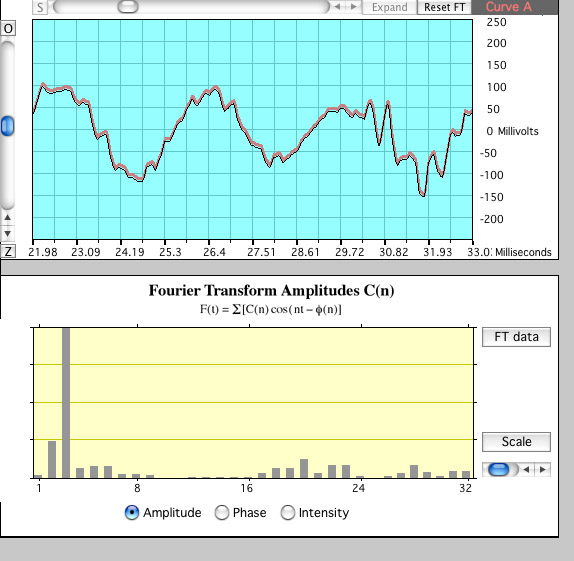
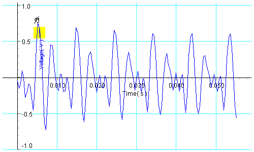
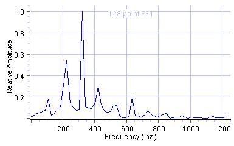
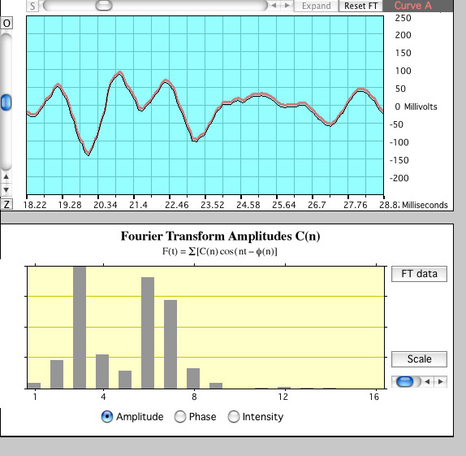

Sound AnalysisSample Lab Report Sound: Voice, AH vowel., Recorded level: 70 dBA Start time: .0096 sec, End time: .0414 s, Periods spanned: 3 Calculated period: .0106 sec, Calculated frequency: 94.3 Hz Nearest equal tempered note: 92.5 Hz F2 sharp.   Ah vowel, measured frequency 96Hz Sound: Voice, EE vowel., Recorded level: 64 dBA Start time: .0041 sec, End time: .0452 s, Periods spanned: 4 Calculated period: .0106 sec, Calculated frequency: 97.3 Hz Nearest equal tempered note: 98Hz G2.   EE vowel, Measured frequency 98Hz  Sound: Voice, OO vowel., Recorded level: 62 dBA Start time: .0052 sec, End time: .0534 s, Periods spanned: 5 Calculated period: .00964 sec, Calculated frequency: 103.7 Hz Nearest equal tempered note: 103.8 Hz G2 sharp.   OO vowel, Measured frequency 102Hz  |
Index |
| HyperPhysics***** Physics 2030K ***** Physics 2030K Laboratory | Go Back |